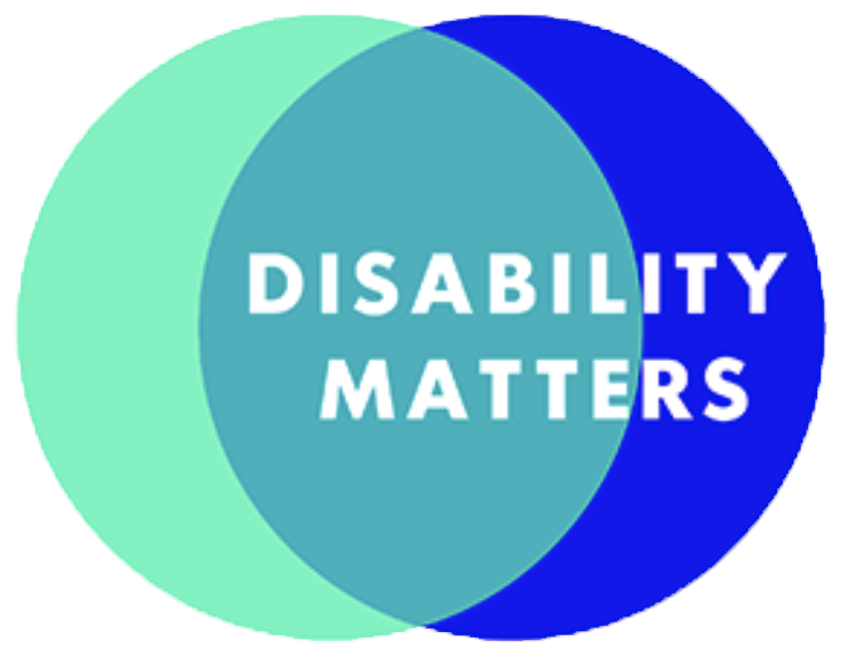
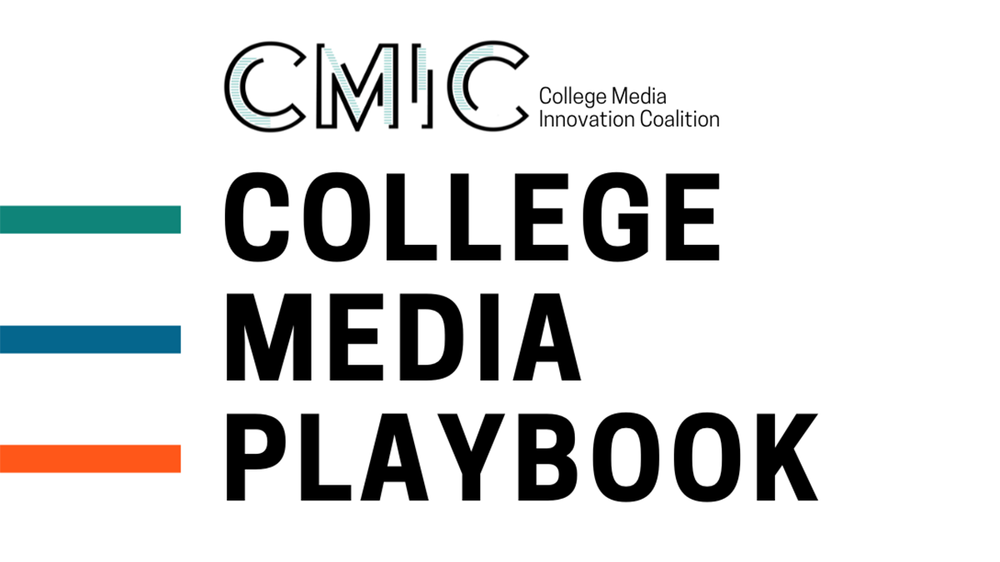
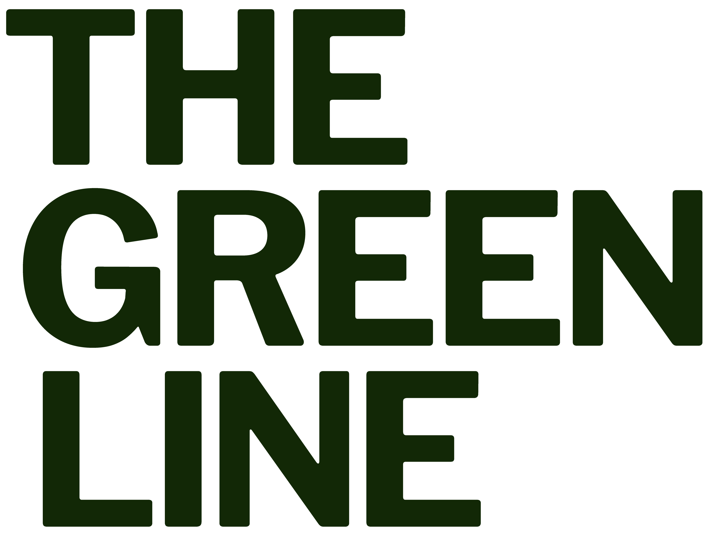
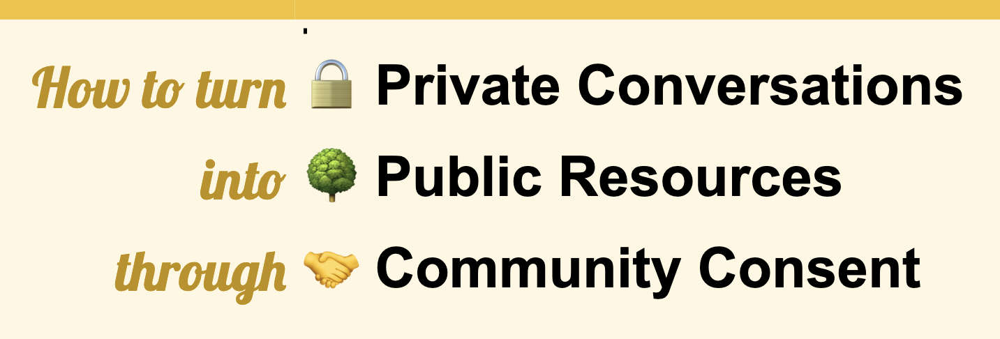

Are you ready for source tracking? Here’s a practical playbook to know.
This practical playbook will help you work through if your team and/or organization is ready to start source tracking.
Based on DEIB best practices from Emma Carew Grovum and Sisi Wei, and the Source Diversity Tool research from 78+ journalism orgs by RJI and Chalkbeat.
A project of RJI, Emma Carew Grovum and Sisi Wei

Disability Matters
A toolkit for newsrooms to better serve the disability community.
This toolkit was produced as a starting point for journalists or news organizations looking to improve coverage of disability and the accessibility of news products.
The first half of this toolkit is focused on improving coverage of disability. The second half is focused on making journalism more accessible.
2021 RJI Fellow Hannah Wise
Journalism Source of Safety
Journalism Source of Safety (J-SOS) is an online toolkit that offers trauma-informed and identity-aware journalist safety checklists, tips, gear advice, and other necessary security information for all journalists, including freelancers and students, with an emphasis on equity and ethics.
2022 RJI Fellow Tara Pixley

College Media Playbook
Helping student newsrooms be more efficient, sustainable and innovative
We researched three topics: finding sustainable sources of funding, continuing progress through high staff turnover and divesting from print. This playbook includes examples, guidance, templates and tips for addressing these challenges.
Sydney Lewis, Student Innovation Staffer
News Executive Leadership Transition Guide
Get started with this guide to start your succession planning and be ready for leadership transitions.
This planning guide was created for small, independent local nonprofit and for-profit news organizations to help them grow into mature, thriving businesses that serve their communities and transition gracefully past their founding, startup stage.
2022 RJI Fellow Amy L. Kovac-Ashley

Attention ↹ Action Journey
Creating community-driven journalism that encourages civic engagement
This guide will walk journalists through The Green Line‘s original theory-of-change models, its Attention Funnel and Action Journey.
Help your news publication increase loyalty and engagement among audience members, as well as motivate your audience to take action on issues that matter to their communities.
A partnership project of RJI and The Green Line

How to turn private conversations into public resources through community consent
Many times, it is only because a conversation was off the record, that we are able to learn the most — and after learning it, we realize that the broader community could benefit from learning it too.
So how do we share knowledge from conversations we all agreed would be private, in a way that builds more trust instead of tearing it down? This guide shares one possible process.
2021 RJI Fellow Sisi Wei
Guide: Build a local real estate development news app with airtable
This guide will show you how to build a reader engagement-fueled news app to track and map local real estate development. It is hosted on a blank, open-source template site you will be able to customize to build a tracker for your city, using open-source or freemium tools.
It is designed for small, local news publishers with limited resources who want to bootstrap a news app, but anyone is welcome to try it out. Read the guide to learn how and get started.
2021 RJI Fellow Kate Abbey-Lambertz

Solutions Journalism Toolkit
If the missing parts of the public conversation include “What could be done about this? Who is doing a better job handling this problem?” then it’s a good candidate for a solutions journalism piece.
This toolkit will help you learn the basics of solutions journalism and how to utilize it in your newsroom.